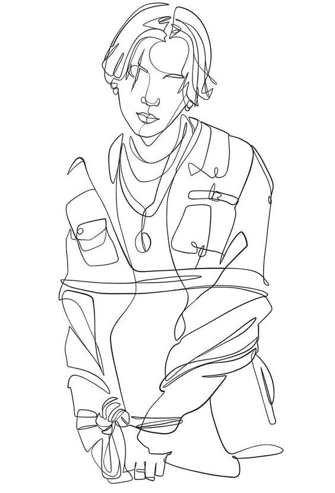
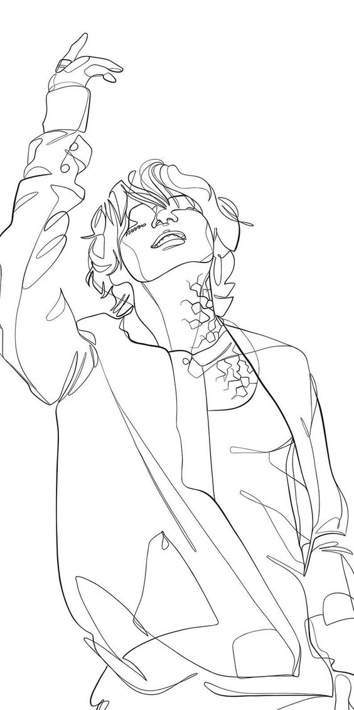

INCEPTION
The male team members were selected throughout 2011 and 2012 through auditions. The lineup changed more than once, but in 2012 it became what fans know BTS today. Six months before the first performance, the boy band appeared on social networks. On Twitter, the members made contact with potential fans by announcing their imminent performance on stage.

The anticipated debut of BTS, "warmed up" by the announcements, saw the public in 2013. The musicians put up covers of the first songs on their YouTube channel and the online platform SoundCloud several months before appearing on radio and television. They debuted with the song "No More Dream"
![bts predebut photo]()
The debut album of the band from the so-called "school trilogy Skool Luv Affair" appeared in the summer of 2013 in CD format. BTS's firstborn proved to be more than successful and won 3 prestigious national awards in 2013-2014.
In 2014, the third mini-album of the trilogy and the song "Boy in Luv" appeared. The track became mega-popular, the group recorded a bright video for it, and the disc took the 3rd place in the American Billboard chart. In the summer of the same year, the boy band took part in the "Bridge to Korea" festival, which was held in Russia with the aim of strengthening tourist ties between the two countries.
"Thank you so much
Because of your inferiority complex
I was able to prove myself something
I wasn’t able to do when in high school"
2!3!, BTS
BREAKTROUGH
The end of 2016 was a lucky year for BTS to win awards. They won the Best Artist award at the 2016 Asia Artist Awards, which was held for the first time this year. The group also won Daesang Album of the Year at the MMA 2016 ceremony for the first time in three years after debuting, and the guys couldn't hold back their tears. BTS has been named strongest candidates for Daesang at the 2016 MAMA, Golden Disk, Seoul Gayo Daesang, Gaon Chart K-POP Awards.


Thanks to a massive fan base that stretches around the globe, BTS was able to overtake pop superstars like Justin Bieber and Selena Gomez and capture the Top Social Artist award, presented by ION360, during the 2017 and 2018 Billboard Music Awards.
In 2019 and 2020 they also gets "Best Male group" and become one of the popular boys group in the world

Global sensation BTS has become the first K-pop group to ever receive a Grammy Award nomination.They performed their global hit at GRAMMY 2021. But unfortunately they didn't get award.
Their latest hit song "Dynamite" was nominated for the Best Pop Duo/Group Performance category, alongside stars like Lady Gaga and Taylor Swift.


According to Pollstar, BTS ranked # 1 on the Live 75 weekly concert tour chart. The chart is compiled based on the average number of tickets sold in the last 30 days. So, based on the chart, BTS sold 51,106 tickets in 30 days ($ 5,800,033 !!!). Note that concerts in London, Sao Paulo and Paris (two in each city) were sold out. At the same time, ticket prices were about twice as high as those of Rod Stewart, who took second place.